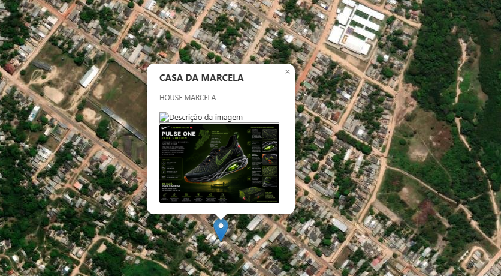
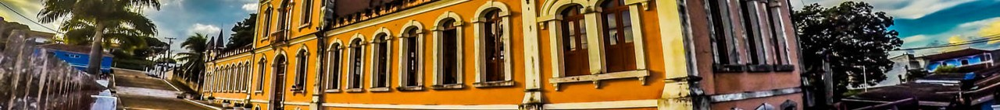

• Atualização do Mapeamento Histórico: Adicionamos 5 novos pontos no Forte do Desterro.
Bem-vindo ao Portal de Óbidos
Explore a história, a cultura e a geografia da "Sentinela do Amazonas".

Explore a história, a cultura e a geografia da "Sentinela do Amazonas".

• Atualização do Mapeamento Histórico: Adicionamos 5 novos pontos no Forte do Desterro.